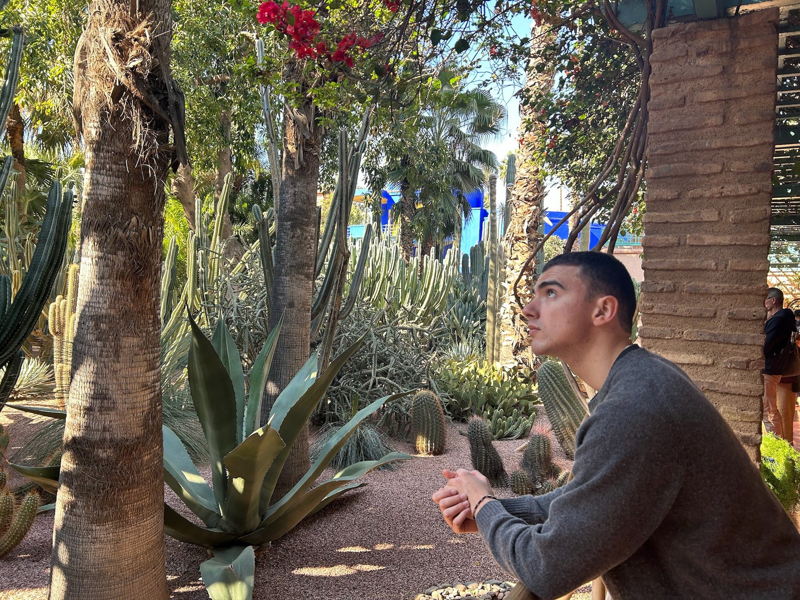

Computational Cosmology
Thesis Project · 2026
An interactive visualisation of the phase-space density n(q, η) derived from Zel'dovich perturbation theory. The simulation evolves a cosmological density field in 2D and 3D, showing how large-scale structure forms from small initial perturbations in an expanding universe.
About

Physics Undergraduate · Heidelberg University · 2026
I am a Physics undergraduate student at Heidelberg University, working within the Department of Theoretical Astrophysics. My studies sit at the intersection of cosmology, gravitational theory, and computational physics.
I am currently completing my Bachelor's thesis on the evolution of the dark matter density distribution in the universe. Using perturbation theory in the Zel'dovich approximation, I derive and simulate how the phase-space density field n(q, η) grows from small primordial perturbations into the large-scale structure we observe today.